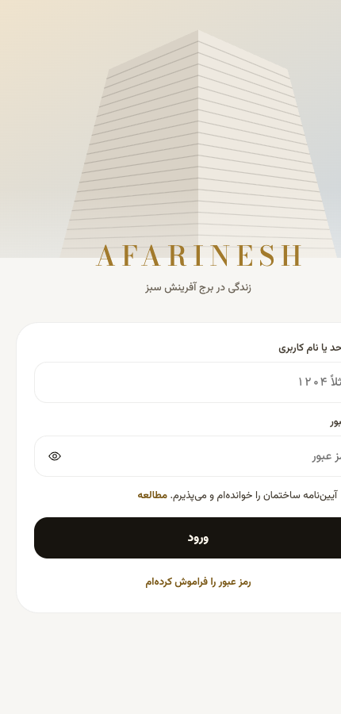

این چیست؟
«آفرینش سبز» یک برنامهٔ ساکنان برج است. هر ساکن با نام کاربری و رمز وارد میشود و همهچیز را از یک جا انجام میدهد:
- رزرو استخر، اسکواش، سالن و میز کافه
- سفارش غذا و نوشیدنی از کافه و آشپزخانه
- درخواست تعمیر و خدمات و پیگیری آن
- مالی: شارژ، پرداختها و گزارش هفتگی PDF (همه به تومان)
هر ساکن فقط اطلاعات واحد خودش را میبیند. مدیر ساختمان و ادمین، همه را میبینند و درخواستها را رسیدگی میکنند.
برنامه روی گوشی و کامپیوتر کار میکند، حالت روشن و تیره دارد و اطلاعاتش واقعی و مشترک است. اگر علی ساعتی را رزرو کند، همان لحظه برای نوید پر میشود.
باز کردن برنامه · نمونهٔ گزارش هفتگی PDF

چطور کار میکند؟
سه بخش دارد و هر کدام ساده است:
- ظاهر برنامه: روی GitHub Pages، رایگان و همیشه آنلاین.
- پایگاه داده و ورود: روی Supabase (حساب شخصی شما). رزروها، سفارشها و پرداختها همه اینجا ذخیره میشود. قوانین پایگاه داده جلوی دیدن اطلاعات دیگران را میگیرد.
- آفبات (دستیار هوشمند): یک چت که با OpenAI حرف میزند و به اطلاعات واقعی ساختمان وصل است.
آفبات چطور رزرو میکند؟
ساکن پیام میدهد←آفبات ساعتهای خالی را از سیستم میخواند←پیشنهاد میدهد←ساکن «تأیید» را میزند←رزرو ثبت میشود
استخر پنجشنبه ۹ شب
ساعت ۹ شب جا هست. این کارت رو تأیید کن تا رزرو بشه.
نکتهٔ مهم: آفبات خودش چیزی را ثبت نمیکند. فقط پیشنهاد میدهد و تا تأیید شما نیاید، هیچ رزروی نمیشود. بعد از پیشنهاد، ساعت ۳ دقیقه برای شما نگه داشته میشود تا کس دیگری نگیرد.
به فارسی و انگلیسی جواب میدهد و لحنش صمیمی و رک است، شبیه Grok.
الان کجاییم و قدم بعدی چیست؟
این نسخه فقط «هوش مصنوعی را روشن کرده». هنوز هوشمند کامل نیست. آفبات وصل است و کار میکند، اما هنوز اشتباه میکند.
مشکلی که دیدیم
- گاهی بین دو پیام، چیزی را که خودش پیدا کرده بود فراموش میکرد و بعد از «آره» رزرو نمیشد.
- گاهی روز هفته را اشتباه حساب میکرد (مثلاً «چهارشنبه»).
قدم بعدی: هوشمندتر کردن
- حافظهٔ گفتگو: نتیجهٔ جستجوهایش (ساعتها، منو) را تا پیام بعدی نگه دارد. در حال ساخت.
- فهم تاریخ: «چهارشنبه»، «فردا» و «۲۳ مهر» را خودِ سیستم محاسبه کند، نه مدل.
- پیشنهاد جایگزین: وقتی ساعت پر است، نزدیکترین ساعت خالی را پیشنهاد دهد.
- صفحههای ادمین: افزودن فضا، ساعت و ظرفیت، منو و ساکنان، بدون نیاز به کدنویسی.
- پرداخت واقعی به جای پرداخت آزمایشی، و ارسال ایمیل و پیامک.
- شناخت بهتر هر ساکن: مثلاً ساعتهای همیشگی او را به یاد داشته باشد.
خلاصه: برنامه کامل و زنده است، آفبات روشن است، و مرحلهٔ بعد «باهوش و قابلاعتماد کردن» آن است.